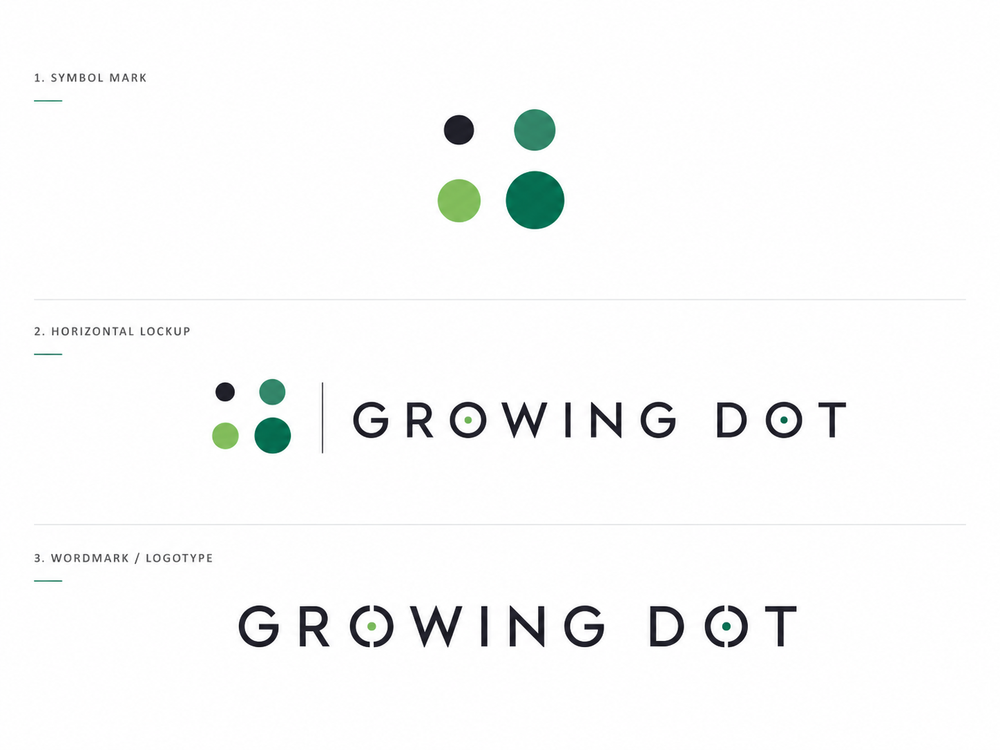

CURATED BY GROWING DOT
AI로 펼치는 가능성,
그로잉 닷에서 발견하세요.
흩어진 AI 공모전 소식을 한곳에 모았습니다.
마음에 드는 기회를 찾고, 공식 공고에서 자세히 확인하세요.
—개의 공모전
등록된 공모전이 없습니다.

그로잉 닷이 모아 전하는 AI 공모전CURATED BY GROWING DOT
흩어진 AI 공모전 소식을 한곳에 모았습니다.
마음에 드는 기회를 찾고, 공식 공고에서 자세히 확인하세요.
등록된 공모전이 없습니다.